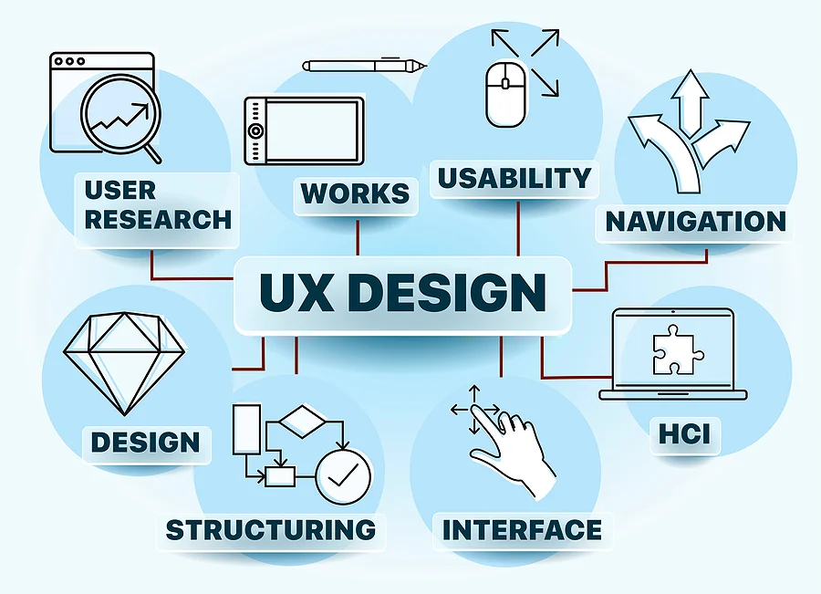

What are UX Roles?
UX roles describe the various parts designers play in the design process.
They range from generalist roles—e.g., UX designers and product designers—to specialist ones such as visual designers and UX researchers.
UX roles might overlap in scope, and they keep evolving with our understanding of the ideal design process.
"Successful design projects require effective collaboration and healthy conflict.”
—Dan M. Brown, Author, co-founder and principal of EightShapes

UX Roles Serve the Design Process
One major part of what a design team does is to follow a user centered design process and work through it to produce the best possible designs for the target users.
Team-mates perform many tasks throughout projects—from user research[TTV3] , to prototyping, to conducting usability testing—to iterate towards optimal solutions.
Design thinking showcases the key UX tasks corresponding to these roles. It also reflects how each role contributes slightly differently regarding tasks.
Main roles are:
1. UX designers (akaInteraction/UI/Experience designers)
Generalists working on all design thinking phases.
Tasks:
- • Conduct UX research
- • Find users’ pain points
- • Generate ideas through, e.g., worst possible idea
- • Choose the best ideas
- • Offer/accept critique on possible solutions
- • Prototype
- • Conduct usability testing
- • Release the most beneficial design
Typical Deliverables:
- • User personas
- • Customer journey maps
- • Problem statements
- • Paper prototypes
- • Wireframes
- • High-fidelity, pixel-perfect mock-ups
- • Reports: usability, user research, heuristic evaluation and user testing
- • Design pattern libraries, style guides or design systems
Back to top
2. Product designers
Like UX designers, but focusing especially on product design and the UX.
They help create product designs, goals and roadmaps (high-level summaries/6–12-month forecasts of product offerings and features).
Tasks:
- • (Same as UX designers’)
- • Inform and plan roadmaps
- • Collaborate closely with development and marketing teams to ensure designs can be implemented properly
Typical Deliverables:
- • (Same as UX designers’)
- • Product roadmaps (probably co-developing these alongside other stakeholders)
Back to top
3. Visual designers
Specialists with graphic design/visual design backgrounds focusing on making pixel-perfect prototypes later in the design process.
Tasks:
- • Convert UX goals into attractive design sets (e.g., app screens) with high usability and accessibility
- • Create and/or maintain libraries of product icons, colors and fonts
- • Apply branding guidelines
- • Utilize design concepts (e.g., Gestalt principles) to make pleasing graphical user interfaces (GUIs)
Typical Deliverables:
- • Prototypes: pixel-perfect and interactive
- • Visual style guides
- • Icon libraries
- • Design specifications for frontend developers to produce needed live code
- • Branding materials or guidelines supplementing each product
Back to top
4. User/UX researchers
Researchers interested in human psychology, focusing on understanding and advocating for users.
Tasks:
- • Understand users deeply through qualitative research
- • Develop realistic understandings of specific user traits through quantitative research
- • Analyze gathered user data to synthesize key findings and make design proposals
- • Advocate to other internal stakeholders for users’ needs and perspectives
- • Help inform product goals by presenting research findings to relevant internal stakeholders
- • Test and improve designs using evaluative research – e.g., usability testing
Typical Deliverables:
- • User personas
- • User stories
- • Customer journey maps
- • “How might we” statements
- • Reports: user research, usability, heuristic evaluation and user testing
Back to top
5. Content strategists
Skilled in copywriting to create persuasive, clear, consistent copy (during prototyping) to appear directly on products.
Tasks:
- • Write copy so users can navigate, use and troubleshoot user-interface products easily
- • Create effective page titles and navigation menu item names so users can intuitively access desired pages/screens
- • Write simple, effective and blame-free error messages to assure users
- • Craft effective emails and newsletters to achieve product goals
- • Weave cohesive narratives throughout products to express a consistent tone of voice and direction for users
- • Define and maintain a vision for each product’s language for across-the-board application
Typical Deliverables:
- • Copy (incorporated into products)
- • Editorial/product language guidelines, setting each product’s tone and content style
Back to top
6. UX unicorns (aka UX engineers)
A rare breed handling UX design and frontend development.
Tasks:
- • (Same as UX designers’)
- • Develop live frontend prototypes for realistic usability testing
- • Implement frontend code
Typical Deliverables:
- • (Same as UX designers’)
- • Frontend prototypes
- • Ready-for-launch frontend code
Back to top
Organizations’ definitions of UX roles vary.
While these shouldn’t deviate drastically from those listed above, you should research a brand’s culture to understand its expectations.
For instance, recruiters scanning UX portfolios may want a “UX designer” to handle all UX-related tasks.
Applicants would then address that in their UX cover letters and UX resumes.
Also, with the industry’s dynamic nature, expect to constantly find new job titles, job descriptions and UX tools.
Nonetheless, your knowledge remains timeless – you just must adapt to whatever hat your company wants you to wear.
Back to top